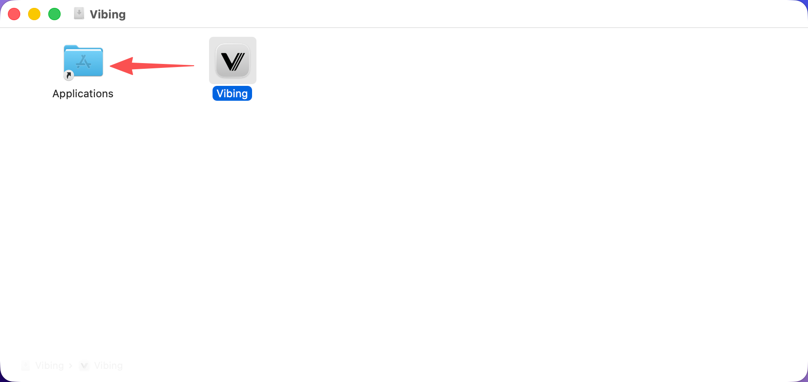
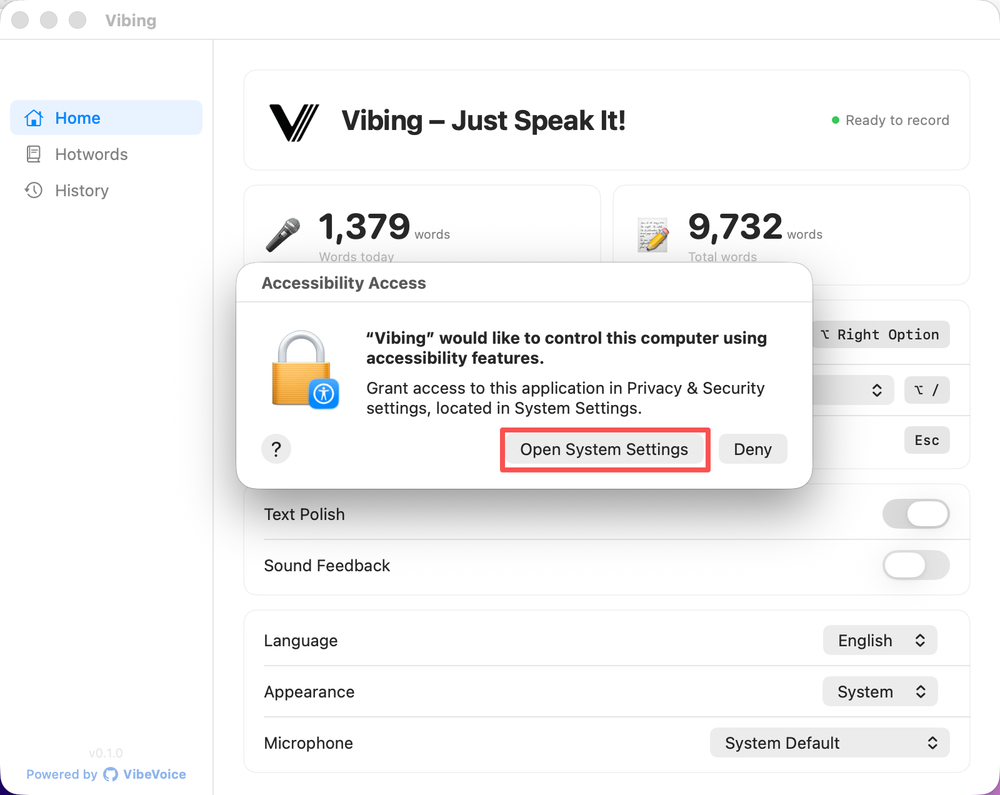
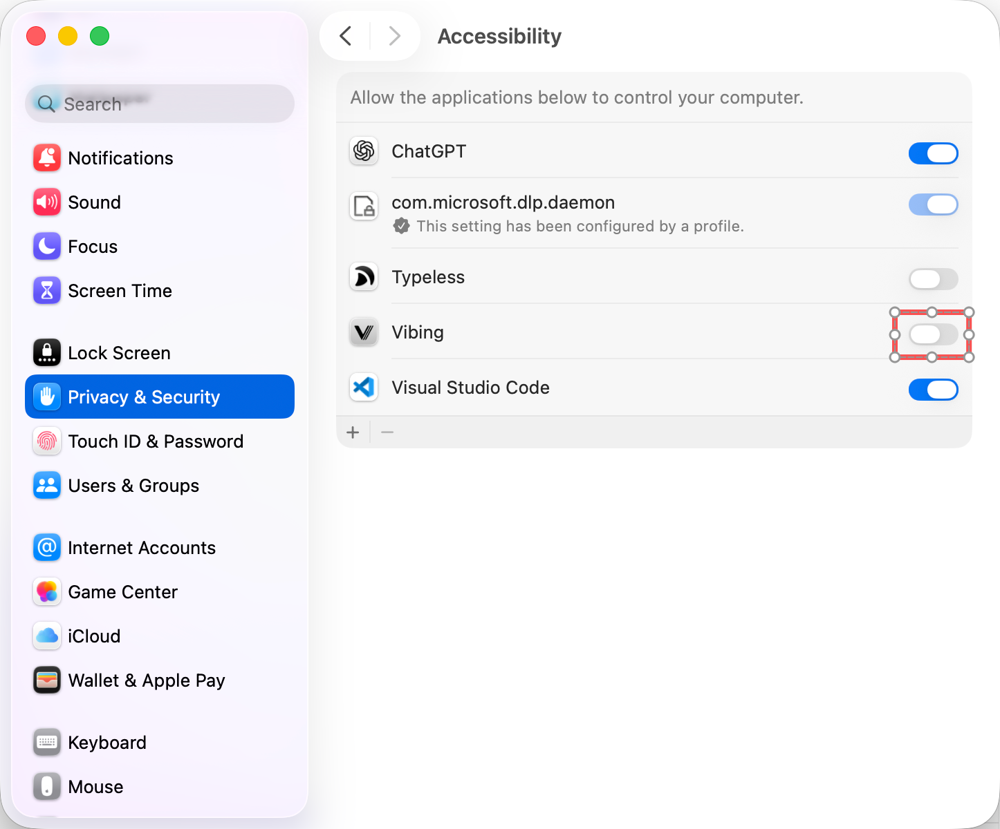
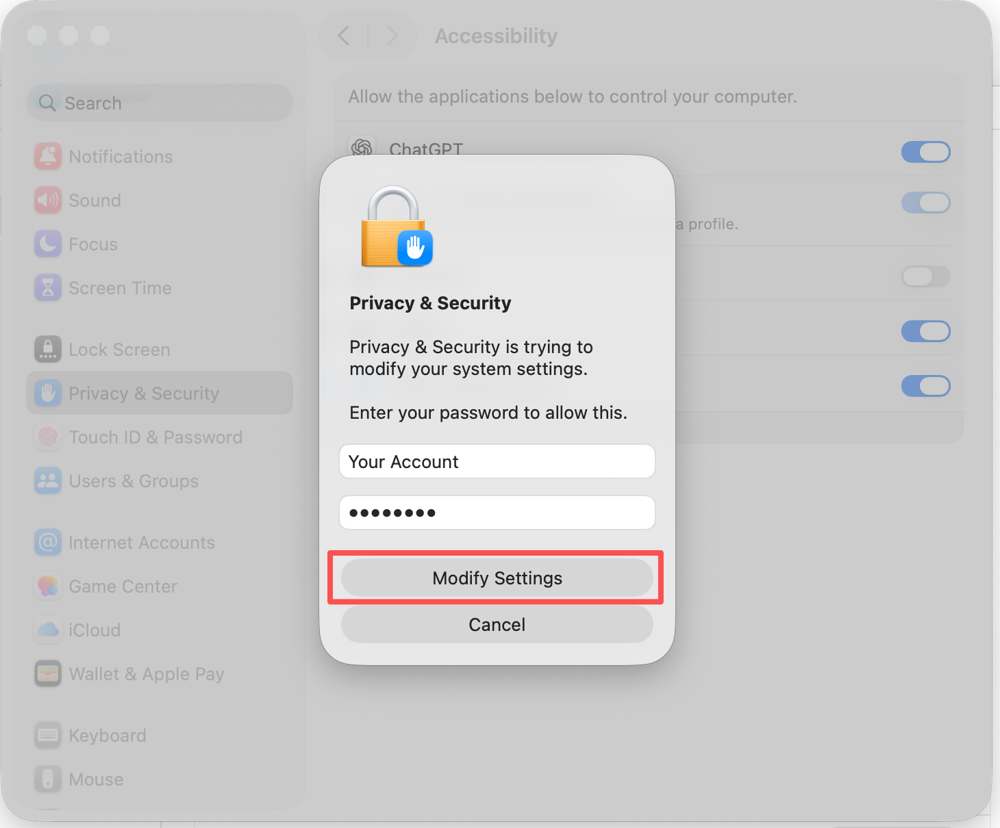
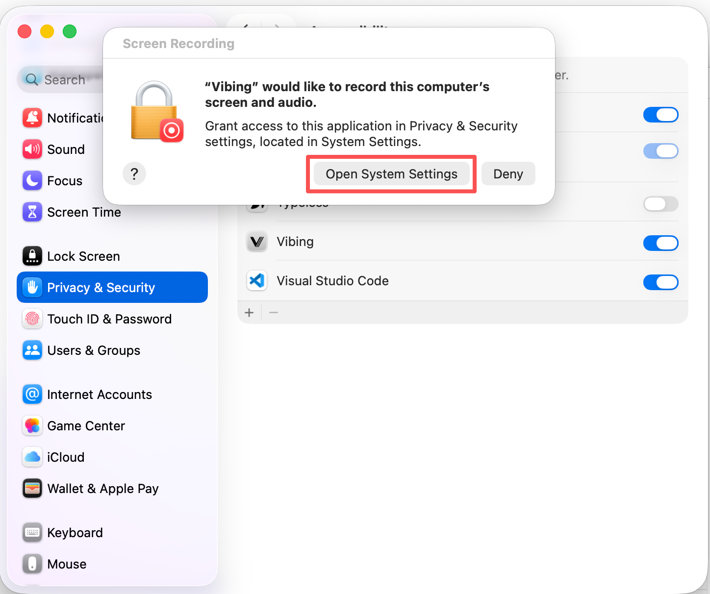
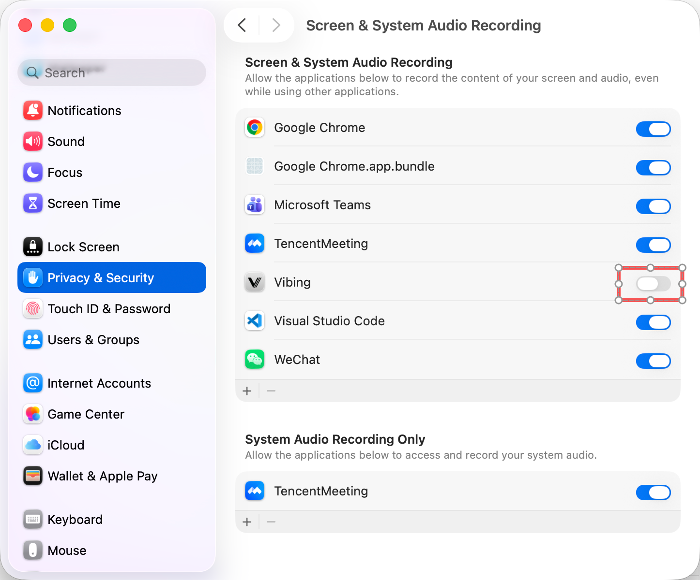
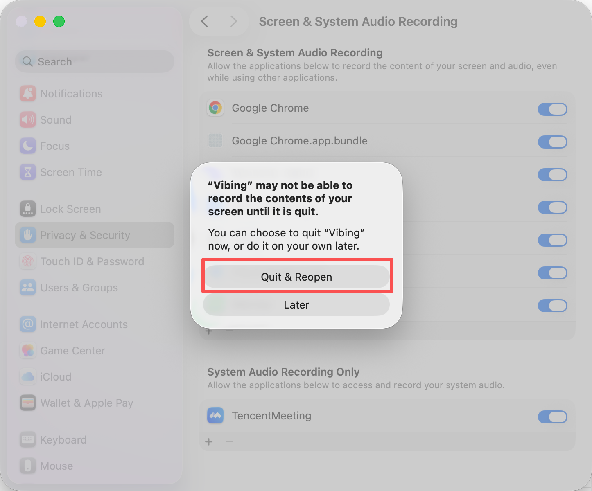
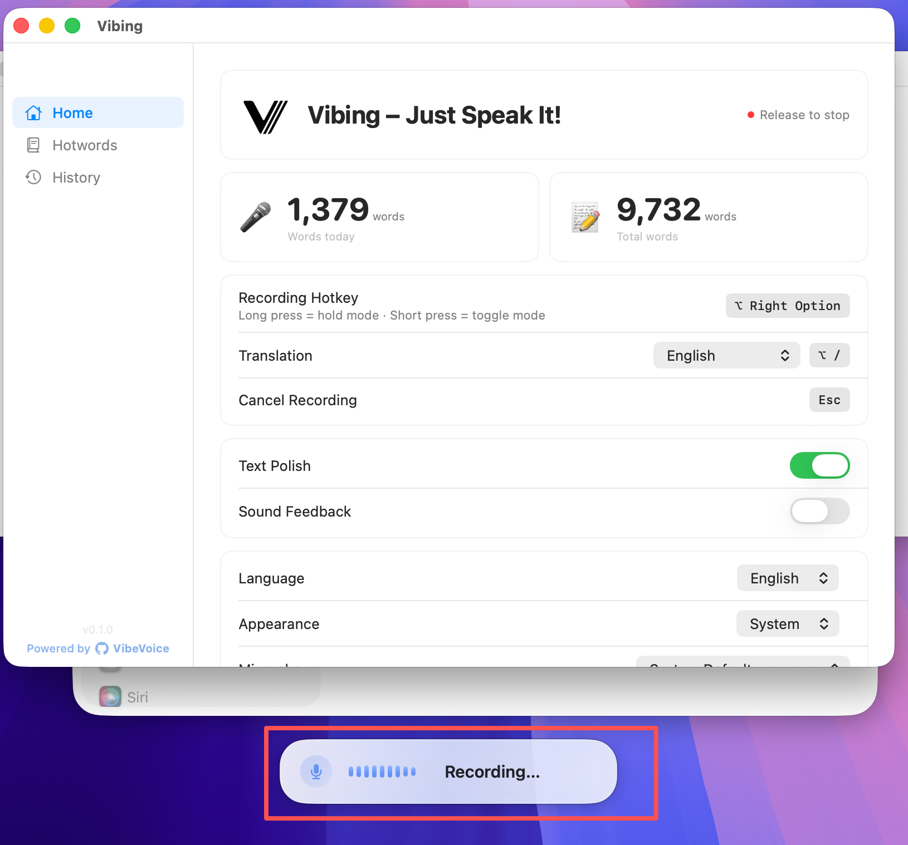

macOS 14+ · v0.1.0
Open Vibing.dmg and drag Vibing into the Applications folder.

Open Vibing. An Accessibility Access dialog appears. Click Open System Settings.
💡 If you can't find the Accessibility dialog, it may be hidden behind the Vibing window — try moving or minimizing Vibing first.

In System Settings → Privacy & Security → Accessibility, find Vibing and toggle it ON.

Enter your Mac password and click Modify Settings.

Press Right ⌥ Option on your keyboard. This will trigger a Screen Recording permission dialog.
Press Right ⌥ Option → the dialog below will appear
Click Open System Settings.

In Screen & System Audio Recording, find Vibing and toggle it ON.

Click Quit & Reopen to apply the screen recording permission.

Press Right ⌥ Option — the Recording... overlay appears, meaning Vibing is ready. Press again to transcribe.
Press Right ⌥ Option → Recording... appears → press again to transcribe
